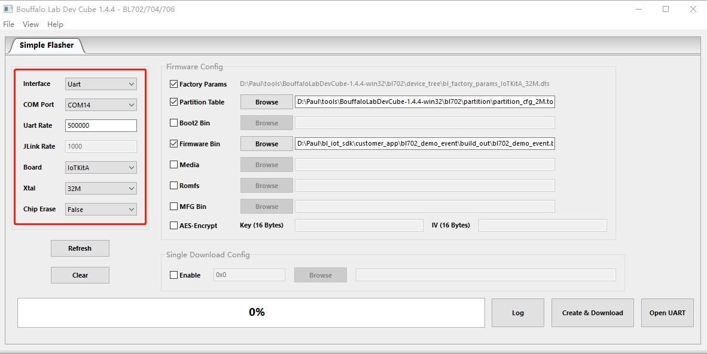
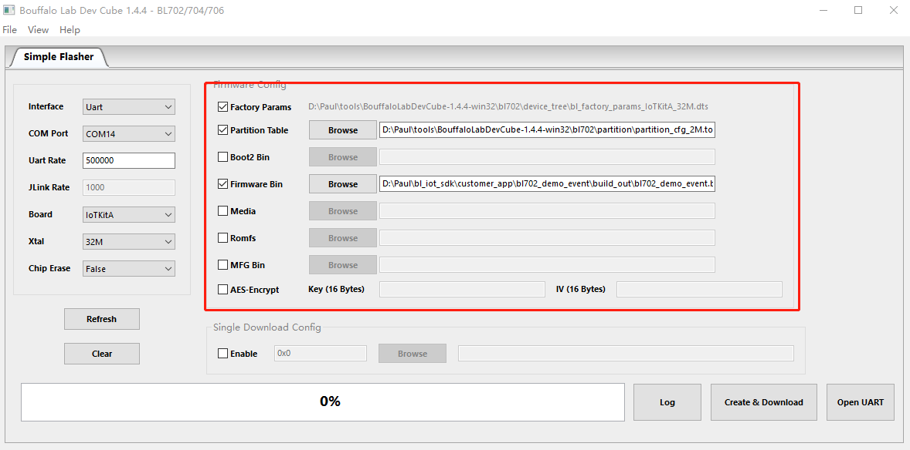
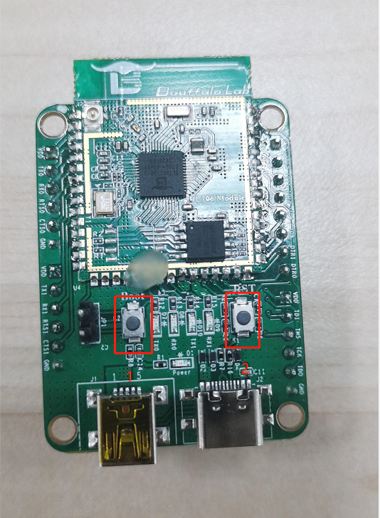

Dev Cube 简介
Dev Cube 是博流提供的芯片集成开发工具，下载网址为https://dev.bouffalolab.com/download，其包含IOT程序下载、MCU程序下载和RF性能测试三种功能。本文档主要介绍IOT程序下载相关配置。
Dev Cube 提供用户下载程序的功能，并且支持时钟、flash等参数配置，用户可根据自身需求决定是否对程序进行加密、添加签名、更换程序启动时的信息文件、用户资源文件、分区表等功能配置。
用户可以通过 Bouffalo Lab Dev Cube，获取最新版本的Dev Cube。
双击解压后文件夹中的BLDevCube.exe，在Chip Selection对话框中选择对应的芯片型号，点击Finish进入Dev Cube主界面。

芯片选择
IOT程序下载
在View菜单中选择IOT选项，会进入IOT程序下载界面，主要分为程序下载方式的配置和下载参数的配置。
配置程序下载方式
配置参数包括：
- Interface：用于选择烧录的通信接口，这里选择 Uart 进行下载
- COM Port: 当选择 UART 进行下载的时候这里选择与芯片连接的 COM 口号，可以点击 Refresh 按钮进行 COM 号的刷新
- Uart Rate：当选择 UART 进行下载的时候，填写波特率，下载频率500Khz
- Board：选择所使用的板子型号，这里选择 IoTKitA，当板子选定后，Xtal 会自动更新成与板子匹配的默认值，当然用户也是可以再次更改的
- Xtal:选择下载时的晶振频率，如果电路板没有焊接晶振，此处应当选内部RC32M时钟源
- Chip Erase 默认设置为False，即下载时不擦除整片Flash

IOT程序下载方式选择界面
配置下载参数
配置参数包括：
- Partition Table：使用Dev Cube目录下对应芯片型号 partition 文件夹中的分区表，默认选择2M的文件
- Boot2 Bin:它是系统启动后运行的第一个Flash程序，负责建立BLSP安全环境，并引导主程序运行，使用Dev Cube目录下对应芯片型号 builtin_imgs 文件夹中的 Boot2 文件，BL702不需要勾选Boot2 Bin
- Firmware Bin：用户编译生成的bin文件路径
- Media/Romfs：Media和Romfs二选一，如果勾选 Media，选择的是文件，如果勾选 Romfs，则选择的是文件夹
- MFG Bin：选择MFG文件
- AES-Encrypt：如果使用加密功能，需要将AES-Encrypt选项选中，并在旁边的文本框中输入加密所使用的Key和IV。输入的是十六进制对应的“0”~“F”，一个Byte由两个字符构成，所以Key和IV分别要求输入32个字符，从左到右，是高字节到低字节。需要注意的是IV的最后8个字符（即4Bytes）必须全为0
- Single Download Config：勾选Enable后可下载单个文件，在左侧文本框填写下载的起始地址，以0x打头

下载参数选择界面
下载程序
设备可以通过USB连接电脑，用户可以使用其中任意一个USB口，但不可两个USB口同时连接；下载前，硬件先进入Boot模式，先长按图标号1中的按键(boot键)不释放，再短按标号2中的按键(Reset键)并释放，最后释放图标1中的按键
点击
Create&download，出现如下图所示表明下载成功：

注解
若没有连接板子，只需生成应用程序镜像和启动参数配置文件，也是点击Creat&Download按钮